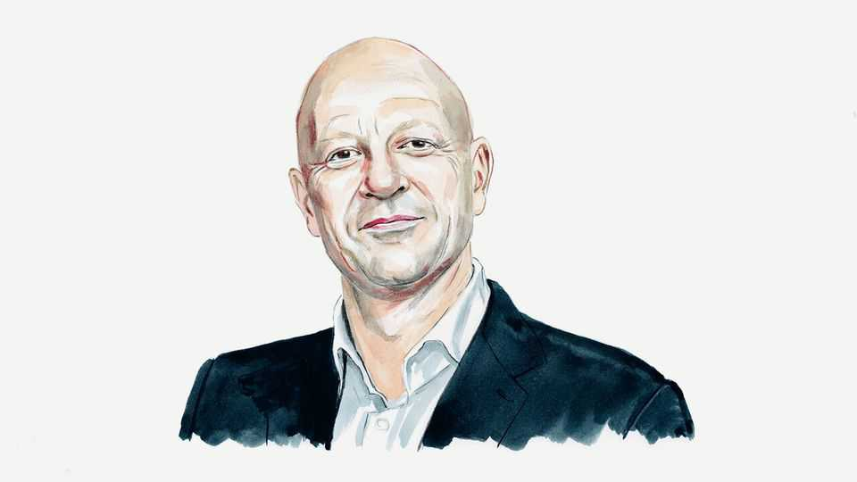

Can effective altruists grow up?
What AI needs is people of good judgment, writes Leif Wenar

Oct 8th 2026
BUDDHA, JESUS and Mo Tzu lived among the poor and taught compassion for all. The early British utilitarians championed human equality, as they campaigned to end slavery and win equal rights for women.
My fellow readers of The Economist may be bemused to hear that the effective altruists now have this century’s biggest idea. You mean, the folks who can look at our fractious and bedraggled world and declare, “We must save the shrimp”?
What’s good in effective altruism isn’t new, and what’s new isn’t good. Yet some effective altruists have power over artificial intelligence, and that’s a problem for us all.
For years I have watched the growth of effective altruism with concern. I head Stanford University’s ethics centre; we run many programmes to help technologists think through the social impacts of what they are building. Part of our challenge is getting through to the students who just want to get rich. Sometimes more challenging still are the effective altruists, who want to save the world.
Moral ambition is great. Good judgment is more important. If you visit an EA message board, you’ll see many asseverations of civilisational importance, often presented in a goulash of mathy jargon. What you won’t see is much common sense about how the world works, or about the impact of policies on real people’s lives. You might not come away from the message board thinking that you’d want an effective altruist to babysit your kids.
My worry is the effective altruists who become too attached to being the hero. One popular EA book, Will MacAskill’s “What We Owe The Future”, tells you that “you can shape the course of history,” and explains how to “structure global society”. But if you check the footnotes on the climate-change charity that the book calls “extremely cost-effective”, you may be surprised by how shaky the book’s guesswork is and how shoddy its research.
Or consider the EA poverty-relief charity, GiveWell. Its front-page pitch is that its grants “will save over 340,000 lives” in poor countries. When you dig into GiveWell’s calculations, you’ll see that they omit many negative factors well known to development economists. GiveWell’s numbers also omit actual deaths. For example, a top-rated GiveWell charity that gives out cash in northern Nigeria reported that one of the many armed bandits who confronted its staff killed two people while looking for the cash. Those deaths are not counted as “minus two” in GiveWell’s “total lives saved” calculations, as by the charity’s own cost-effectiveness reasoning they should be.
What effective altruists love is portentous pronouncements. What they don’t tend to love is accountability. GiveWell may grant a billion dollars this year—but it has never published its “lives saved” claim in a peer-reviewed journal, and the people targeted by its grants seem to have few rights to redress if things go badly. I sometimes wonder whether effective altruists have begun to pronounce so much about the “long-term” future because they know they’ll be dead long before they’re proved wrong.
Effective altruism may be ending as a coherent movement. The proponent who most fully lived out its credo to do the most good with the resources available was the crypto whizz-kid Sam Bankman-Fried. He quite logically saw other people as resources to be used, and he’s now serving 25 years in federal prison for fraud. The old EA leaders who clustered around him have been discredited by their consistently bad judgment. (As the economist Tyler Cowen said, how can we trust their predictions about humanity’s future when they couldn’t even see the risks of Mr Bankman-Fried to their own organisation?) My brightest students now see effective altruism as a bit cringeworthy.
If the movement is mostly over, its legacy will not be all bad. Effective altruism’s main funders are now speaking in public more like reasonable adults. And some of their money is going to fund basic science and public health, just as governments cut back.
Yet what really matters now is the effective altruists building AI. Their creed has always played well in Silicon Valley, where the vibe is permanently Peter Pan. Many effective altruists have joined big tech firms, particularly frontier AI labs such as Anthropic.
AI is powerful and poorly understood. To guide its future, nothing can substitute for good judgment. People of good judgment know the dangers of self-deception and groupthink. They want to be held accountable, because they want to keep contact with reality. They respect the rules and institutions that have evolved to check man’s hubris.
Do the effective altruists in AI have good judgment? Anthropic’s recent safety problems are being investigated by groups with close ties to the boss’s EA friends and family. The main author of the moral “constitution” of Anthropic’s Claude has long intellectual and personal involvement in effective altruism. As far as I can see, there aren’t many external forces that will check such people’s choices. Whether they have a real understanding of human affairs and human lives may soon become clear.
My hope, as always, is for my students. They are so admirable in wanting to use their gifts to better the world. I tell them to start by living among the people they want to help. Then get deep expertise—and dwell on the human consequences when some brainy scheme goes wrong. For simple life experience, maybe go into local politics. Or mentor a neighbour’s struggling kid.
It’s probably too late for the effective altruists in AI to do any of this. Their movement’s final legacy may indeed be measured in human lives—just not in ways that they ever imagined. ■
Leif Wenar is a professor of philosophy at Stanford and the author of “Blood Oil: Tyrants, Violence, and the Rules that Run the World”.